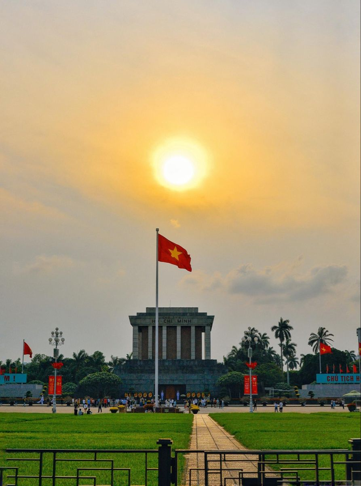
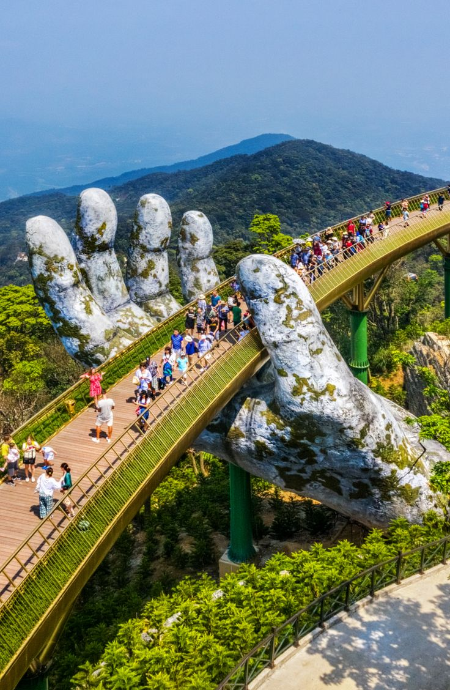
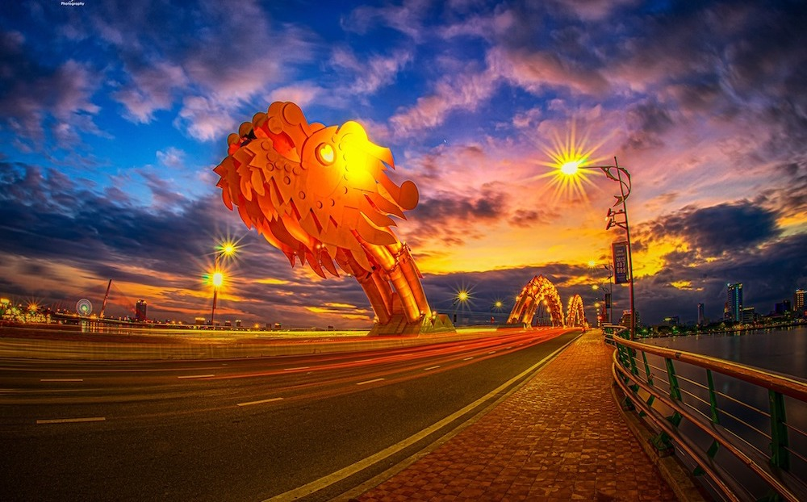
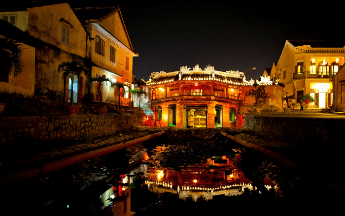
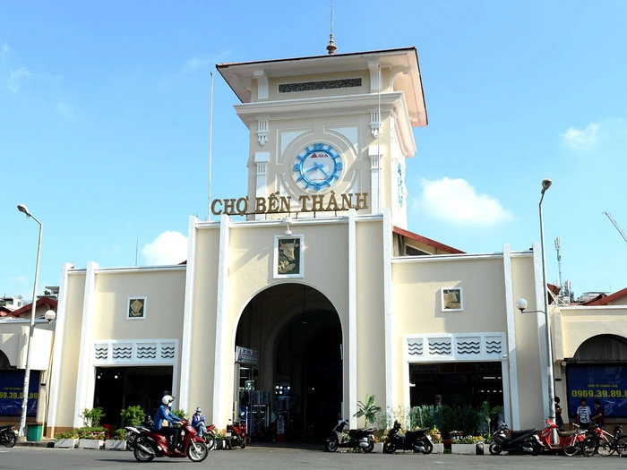

越南著名旅遊景點
🌸 河內
還劍湖與龜塔

還劍湖是河內的象徵，與黎太祖歸還神劍的傳說緊密相連。寧靜古樸的湖景，是漫步與欣賞街景的理想去處。
文廟 – 國子監

越南第一所大學，彰顯越南尊師重道的傳統。古色古香的氛圍在現代城市中格外莊嚴。
胡志明主席陵
胡志明陵是越南偉大領袖胡志明的長眠之地，遊客常來此憑弔並表達敬意。
🌊 峴港
巴拿山
「越南的小歐洲」，全年氣候涼爽，以世界聞名的金橋而聞名。
龍橋
峴港的現代象徵。每逢週末，龍橋會噴火與噴水，帶來壯觀的視覺盛宴。
山茶半島

來到山茶半島，傾聽山林的風聲，看海上日出，在原始自然間尋回平靜與呼吸的節奏。
🏮 會安
會安古城

被聯合國教科文組織列為世界文化遺產。夜幕降臨時，燈籠光彩奪目，營造出夢幻迷人的氛圍。
日本橋（來遠橋）
融合越南、日本與中國文化的建築傑作，是會安古鎮不可或缺的象徵。
🏙️ 胡志明市
聖母大教堂

法式建築的象徵，矗立於西貢中心，以紅磚外牆與高聳的雙鐘樓聞名。
濱城市場
國內外遊客熟悉的地標，在這裡可以品嚐南越美食並購買當地特產。
阮惠步行街

阮惠步行街——西貢最熱鬧的心臟地帶，燈光與音樂交織的現代大道，讓遊客漫步其中，欣賞古典建築並感受胡志明市年輕充滿活力的節奏。